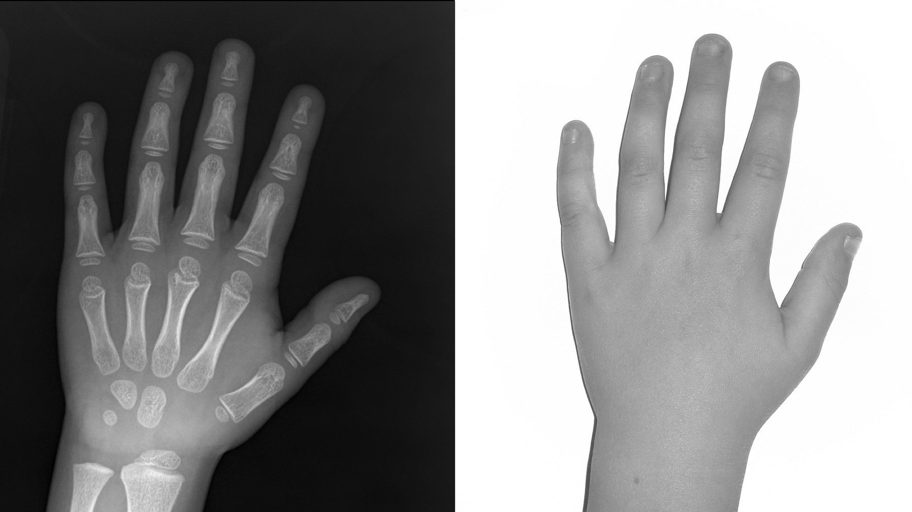

State-of-the-art bone age
artificial intelligence
Deeplasia is an ensemble of three deep Convolutional Neural Network (CNN) models with no human prior.
Bone age can be estimated by observing the ossification centers of a child’s hand and wrist on an X-ray image.
Deeplasia is an ensemble of three deep Convolutional Neural Network (CNN) models with no human prior.
The Mean Absolute Difference (MAD) between the predictions of Deeplasia and the bone age values in the standard public RSNA test set (which are based on six manual reference gradings) is only 3.9 months.
Our bone age prediction models are open source and the codes can be accessed via our GitHub.
The interactive figure below displays the Bland–Altman plot comparing the bone age predictions of Deeplasia with the ground truth values, which are derived from two manual reference gradings. There is no systematic over- or underestimation, and the difference between the predictions of Deeplasia and the manual reference ratings falls within 1.96 standard deviations (i.e., the 95% confidence interval) for 95.6% of the cases.
Double-click on a disorder's name in the legend to isolate only that disorder in the plot. Double-click again on the legend to see all the data points. A single-click on a disorder's name in the legend will add/remove that disorder.
HyCh: Hypochondroplasia, PsPHT: Pseudohypoparathyroidism, None: no genetic disorder, SRS: Silver-Russel Syndrome, Ach: Achondroplasia, IUGR: Intrauterine growth restriction, UTS: Ullrich-Turner Syndrome